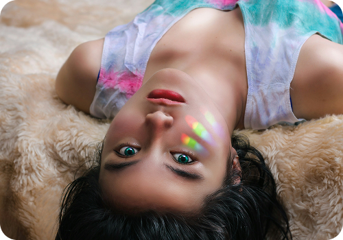
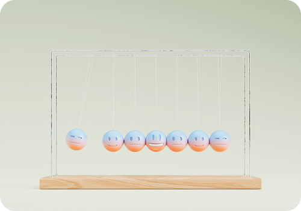

At forstå følelser
At forstå følelser
Hvad prøver dine følelser at fortælle dig?
Glæde, vrede, frygt, tristhed, skam og overraskelse er eksempler på følelser, som alle mennesker kan opleve. Du kan også mærke flere følelser på én gang.
Følelser kan vise sig i kroppen: måske får du uro i maven, spændte skuldre, varme kinder eller lyst til at græde. Det kan hjælpe at lægge mærke til kroppens signaler uden at dømme dem.
Prøv at spørge dig selv: Hvad skete der lige før? Hvad mærker jeg i kroppen? Hvad har jeg brug for lige nu?
En lille øvelse: Kig langsomt omkring dig, og læg mærke til fem ting, du kan se, fire ting, du kan mærke, tre ting, du kan høre, to ting, du kan lugte og én ting, du kan smage. Stop, hvis øvelsen ikke føles rar. Det er et forslag – ikke en behandling.

Sæt ord på følelser
Når det er svært at forklare, hvordan du har det
Nogle gange ved man kun, at noget føles forkert. Du behøver ikke finde det helt præcise ord. “Jeg er presset”, “jeg er urolig” eller “jeg føler mig udenfor” er gode steder at begynde.
Du kan skrive, tegne, vælge et billede eller bruge en skala fra 1 til 10 til at vise, hvor meget følelsen fylder. Du kan også tale med en person, du føler dig tryg ved.
Hvis du ikke har lyst til at fortælle alt, kan du starte med lidt. Du bestemmer selv tempoet, men søg hjælp, hvis følelsen bliver for tung at bære alene.

Alle følelser er okay
Du må gerne føle mere end én ting
Der findes ikke forkerte følelser. Du må gerne være vred og ked af det på samme tid, være glad og nervøs eller have svært ved at mærke, hvad du føler.
Det er forskel på at have en følelse og på, hvad man gør med den. Det er okay at være vred – men det er ikke okay at slå eller gøre andre ondt. Du kan øve dig i at finde en sikker måde at reagere på.
Prøv at trække vejret roligt, gå lidt væk fra situationen eller bed om en pause. Når du er mere rolig, kan du tænke over, hvad der skete, og hvad du har brug for.